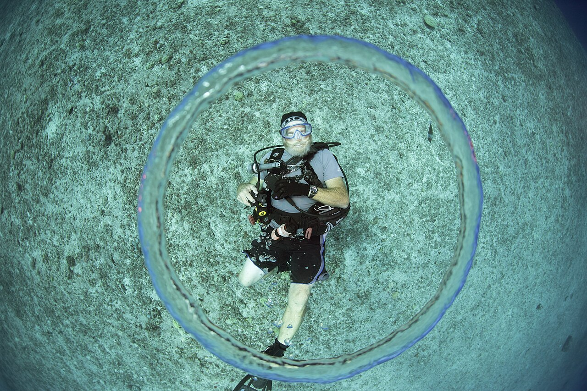

올라갈수록 커지는 공기 방울
교과서 p. 54학습 목표
- 해수의 정역학 평형을 설명할 수 있다.
- 해수를 움직이는 여러 가지 힘을 설명할 수 있다.

예시: 위로 갈수록 기포를 누르는 수압이 작아지기 때문. 일상의 예(비행기에서 부푸는 과자 봉지, 높은 산에서 귀가 먹먹함, 깊이 잠수하기 어려움)를 함께 떠올리게 합니다. 교과서 운영안은 3차시(수압·정역학 평형·수평 수압 경도력 2차시 / 전향력 1차시)입니다.
2차시(100분) 수업 운영안
| 차시 | 단계 | 시간 | 활동 |
|---|---|---|---|
| 1차시 | 동기 유발 | 5분 | 잠수할 때 귀가 아픈 경험, "바다는 왜 기울어진 곳이 없어 보일까?" |
| 핵심 개념 1 | 20분 | 수압과 수압 경도력 → 연직 수압 경도력 식 유도 → 정역학 평형, 수심별 수압 계산 | |
| 해 보기 | 15분 | 두 탱크 실험(시뮬레이션)으로 수평 흐름의 원리 확인 | |
| 정리 | 10분 | O/X ①, 계산 연습 | |
| 2차시 | 핵심 개념 2 | 20분 | 수평 수압 경도력 = g·ΔZ/ΔX 유도, 해수면 경사가 생기는 세 가지 원인 |
| 핵심 개념 3 | 20분 | 회전 원반 시뮬레이션 → 전향력의 방향과 크기, 크기 계산 연습 | |
| 정리 | 5분 | O/X ②·③, 해수를 움직이는 힘 표 정리 | |
| 형성 평가 | 5분 | 문항 풀이, 스스로 확인하기 |
들어가기 · 해수를 움직이는 힘 한눈에 보기 기초 다지기
| 힘 | 방향 | 역할 |
|---|---|---|
| 중력 | 연직 아래 | 해수를 아래로 당긴다 |
| 연직 수압 경도력 | 연직 위 (수압 높은 아래 → 낮은 위) | 중력과 평형 → 정역학 평형 |
| 수평 수압 경도력 | 해수면이 높은 곳 → 낮은 곳 | 해수를 수평으로 움직이기 시작하게 한다 |
| 전향력 | 북반구: 운동 방향의 오른쪽 직각 | 움직이는 해수의 방향을 휜다 (속력은 바꾸지 않음) |
| 마찰력 | 운동 방향의 반대 | 바람이 해수를 끌고, 해저 지형이 흐름을 늦춘다 |
수압 경도력과 정역학 평형
교과서 p. 54 ~ 55(1) 연직 수압 경도력
- 수압: 물의 무게 때문에 생기는 압력. 단위 면적에 수직으로 작용한다.
- 같은 깊이에서 해수 양옆에 작용하는 수압은 크기가 같고 방향이 반대라 상쇄된다. 그러나 수압은 깊을수록 크므로, 아래쪽 수압이 위쪽보다 크다.
- 수압 경도력: 두 지점 사이에 수압 차가 있을 때 작용하는 힘. 깊이에 따른 수압 차 때문에 아래에서 위로 연직 수압 경도력이 작용한다.
(2) 정역학 평형
- 연직 수압 경도력만 있다면 해수는 계속 위로 움직일 것이다. 그러나 해수에는 아래로 중력이 작용한다.
- 정역학 평형: 연직 수압 경도력과 중력이 힘의 평형을 이룬 상태
- 그래서 해수는 연직 방향으로는 잘 움직이지 않지만(용승·침강 제외), 수평 방향으로 수압 차가 생기면 쉽게 움직인다. 수평 수압 차는 주로 해수면의 높이 차나 해수의 밀도 차로 생긴다.
(3) 해 보기 · 수평 방향으로 물이 흐르는 원리
- 탱크 A, B의 수면 높이 차가 1 m일 때 수압 차는 몇 hPa인가? (ρ = 1000 kg/m³, g = 10 m/s²)
- 밸브를 열면 물은 어느 쪽으로 흐를까? 높이 차가 커지면 흐름의 세기는 어떻게 될까?
- A, B에 밀도가 다른 액체를 같은 높이로 넣고 밸브를 열면 어느 쪽으로 흐를까?
2. 수면이 높은 A에서 낮은 B로 흐른다. 높이 차가 클수록 수압 차(ΔP = ρgΔZ)가 커져 물을 움직이는 힘이 커지므로 흐름이 빨라진다.
3. 밀도가 큰 액체가 든 탱크에서 밀도가 작은 액체가 든 탱크 쪽으로 흐른다.
자세히 알아보기 ① 연직 수압 경도력과 정역학 방정식 심화 정리
- 수압: 물의 무게 때문에 생기는 압력. 수압 경도력: 두 지점의 압력 차이 때문에 생기는 힘. 언제나 수압이 높은 곳 → 낮은 곳으로 작용한다.
- 식 세우기: 밀도 ρ, 밑넓이 A, 두께 ΔZ인 해수 덩어리의 윗면과 아랫면의 수압 차가 ΔP라면
- 위로 미는 힘 F = ΔP × A, 해수의 질량 M = ρ × A × ΔZ
- 단위 질량당 연직 수압 경도력 = F/M = (1/ρ) × (ΔP/ΔZ)
- 정역학 평형: 위로 작용하는 연직 수압 경도력과 아래로 작용하는 중력이 같아 해수가 위아래로 움직이지 않는 상태
- 정역학 방정식: (1/ρ)(ΔP/ΔZ) = g → ΔP = ρgΔZ
ρ ≈ 1030 kg/m³, g ≈ 9.8 m/s², ΔZ = 10 m 이면
ΔP = 1030 × 9.8 × 10 ≈ 1.01 × 10⁵ N/m² ≈ 1기압
• 수심 10 m에서 받는 압력 = 대기압 1기압 + 수압 1기압 = 약 2기압
• 수심 1000 m에서는 수압만 약 100기압 → 심해 탐사정은 매우 튼튼해야 한다.
개념 확인 ① O/X
수평 수압 경도력
교과서 p. 56(1) 해수면 경사로 생기는 수평 수압 경도력
- 해수면이 기울어 있으면, 같은 깊이에서도 해수면이 높은 쪽의 수압이 더 크다. → 수평 방향으로 수압 경도력이 작용한다.
- 정역학 평형(ΔP = ρgΔZ)을 이용하면, 수평 수압 경도력은 중력 가속도와 해수면 경사에 비례한다.
(2) 밀도 차로 생기는 수평 수압 경도력
- 밀도가 작은 따뜻한 해수(A)는 부피가 커서 해수면이 밀도가 큰 찬 해수(B)보다 높다.
- 따라서 등수압면 사이 간격이 따뜻한 해수 쪽이 더 넓고, 같은 깊이에서 A의 수압이 B보다 높다. → A에서 B로 수평 수압 경도력이 작용한다.
자세히 알아보기 ② 수평 수압 경도력은 해수면 경사에 비례한다 심화 정리
- 밀도가 같은 해수에서 B 쪽 해수면이 A 쪽보다 ΔZ만큼 높으면, 같은 깊이에서 B의 수압이 더 크다: PB − PA = ρgΔZ
- A와 B 사이 거리를 ΔX라 하면 단위 질량당 수평 수압 경도력은
(1/ρ)(ΔP/ΔX) = (1/ρ)(ρgΔZ/ΔX) = g × (ΔZ/ΔX) - 즉 수평 수압 경도력은 해수면의 기울기(ΔZ/ΔX)에 비례하고, 해수면이 높은 곳에서 낮은 곳으로 작용한다.
| 해수면이 기우는 까닭 | 어떻게? | 수압 경도력 방향 |
|---|---|---|
| 바람의 마찰 | 바람이 해수를 한쪽으로 밀어 쌓는다 | 해수가 쌓인 곳 → 빠져나간 곳 |
| 대기압 차 | 고기압은 해수면을 누르고, 저기압 아래에서는 해수면이 부풀어 오른다 | 저기압 쪽 → 고기압 쪽 |
| 수온 차 (밀도 차) | 따뜻한 해수는 밀도가 작아 부피가 커지므로 해수면이 높다. 등수압면 간격도 따뜻한 쪽이 넓다 | 따뜻한 해수 쪽 → 찬 해수 쪽 |
100 km(= 10⁵ m) 거리에서 해수면이 1 m 높아지면 기울기는 10⁻⁵
수평 수압 경도력 = 9.8 × 10⁻⁵ ≈ 1 × 10⁻⁴ m/s² (단위 질량당)
• 눈으로는 전혀 알 수 없는 아주 작은 기울기지만, 넓은 바다 전체에 오래 작용하므로 큰 해류를 만들 수 있다.
개념 확인 ② O/X
전향력
교과서 p. 57회전하는 지구 위에서 휘어지는 운동
- 시계 반대 방향으로 도는 원반 위에서 던진 공은 목표의 오른쪽으로 떨어진다. 다른 힘이 작용한 것이 아니라 관찰자가 회전하기 때문이다.
- 전향력: 회전하는 표면 위에서 운동하는 물체의 운동 방향을 휘게 하는 가상의 힘. 지구상에서 움직이는 모든 물체는 지구 자전에 의한 전향력을 받는다.
- 방향: 북반구에서는 운동 방향의 오른쪽 직각, 남반구에서는 왼쪽 직각
- 크기: 극에서 가장 크고 저위도로 갈수록 작아져 적도에서 0이다.
- 작은 규모의 운동에서는 무시해도 되지만, 해류처럼 큰 규모의 운동에서는 반드시 고려해야 한다.
스스로 확인하기
1. 수평 수압 경도력이 해수면 경사에 비례함을 정역학 방정식으로 설명해 보자.
2. 지구에서 전향력이 작용하지 않는 곳은?
3. 창의력 더하기 · 지구의 자전 방향이 반대가 된다면 전향력의 방향은?
자세히 알아보기 ③ 전향력의 크기와 방향 심화 정리
- 왜 생길까? 관성 법칙에 따라 물체는 힘을 받지 않으면 똑바로 움직인다. 그런데 관찰자가 지구와 함께 돌고 있으므로, 지구 위에서 보면 물체의 경로가 휘어 보인다. 이 효과를 힘으로 나타낸 것이 전향력이다.
- 지구 자전 각속도: Ω = 2π / (24 × 3600 s) ≈ 7.29 × 10⁻⁵ rad/s. 위도 φ인 곳에서 연직 방향 회전 성분은 Ω sin φ이다. 그래서 전향력에 sin φ가 들어간다.
- 크기: C = 2vΩ sin φ
- 속력이 빠를수록, 위도가 높을수록 크다.
- 정지한 물체(v = 0)나 적도(φ = 0°)에서는 0이다.
- 방향: 북반구는 운동 방향의 오른쪽 직각, 남반구는 왼쪽 직각. 운동 방향에 언제나 수직이므로 방향만 바꾸고 속력은 바꾸지 않는다.
속력 1 m/s로 흐르는 해수의 단위 질량당 전향력
• 위도 30°: 2 × 1 × 7.29 × 10⁻⁵ × 0.5 ≈ 7.3 × 10⁻⁵ m/s²
• 위도 90°(극): 2 × 1 × 7.29 × 10⁻⁵ × 1 ≈ 1.5 × 10⁻⁴ m/s² (위도 30°의 2배)
• 위도 0°(적도): 0
이 값을 앞에서 구한 수평 수압 경도력(약 10⁻⁴ m/s²)과 비교해 보자. 크기가 비슷하다는 것이 다음 차시 '지형류 평형'의 열쇠이다.
개념 확인 ③ O/X
개념 확인 문제
그림 출처
사진은 Wikimedia Commons의 퍼블릭 도메인 자료입니다. 모식도와 시뮬레이션은 직접 만들었습니다.